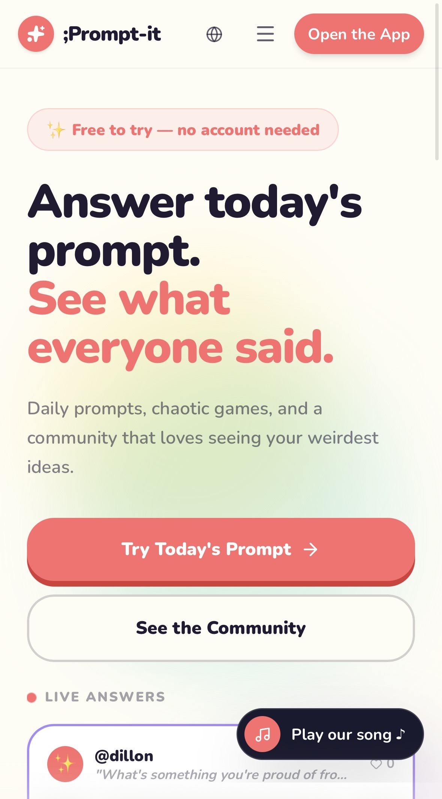

Understand the User
My psychology and UX background helps me think about what people need, what confuses them, and what makes a product easier to use.
UX-Informed Full-Stack Development
I’m Dillon Williams — a full-stack developer in progress with a background in psychology, sociology, and UX design. I build products that focus on clarity, usability, and real human behavior while documenting what I learn along the way.
How I Build
My work combines UX thinking, product strategy, and hands-on development. I care about building things that are useful, understandable, and able to grow over time.
My psychology and UX background helps me think about what people need, what confuses them, and what makes a product easier to use.
I start with structure and clarity, then add polish, interactivity, backend logic, and data as the project becomes more complete.
I use devlogs and case studies to explain what I built, what I learned, what broke, and what needs to improve next.
Featured Build
My main live product and strongest current case study.

Live Product · Active Build
;Prompt-it is built around daily creative prompts, community responses, friend interactions, a credit economy, subscriptions, and creative game modes. My current work focuses on taking ownership of the codebase, documenting the architecture, and improving the product after migration.
Read the Case StudyCommit History
Commit History is my live blog where I document progress, decisions, mistakes, fixes, and lessons from my coding journey.
Live Blog
I use Commit History to turn my development process into readable posts: what changed, why it mattered, what I learned, and what I would do differently next time.
Read Commit HistoryComing Later
As I learn JavaScript and backend development, this section can evolve from a static link into a live preview of recent blog posts.
Website Services
I help small businesses organize their ideas, services, and goals into clean, user-focused websites that explain what they do and give customers a clear next step.
Let's Connect
Reach out if you want to discuss a website, a product idea, or my current work.
Email Me